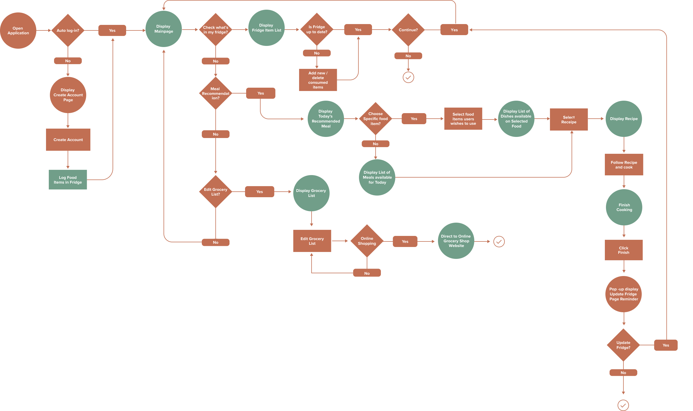

Meet Fridger, an all-in-one fridge management app that helps you reduce food waste and streamlines your cooking routine. For this project, I conducted user research, ideated a solution to people's everyday kitchen problems, and designed a high-fidelity prototype followed by user testings.
Living in a residential college with convenient access to the dining halls, I don't worry about cooking. Talking to friends who cook at home, I found out that for many people, especially college students, the cooking routine is stressful. According to a study done at the University of North Carolina at Chapel Hill, around 86% of the students cook at home, and many of them expressed difficulties in organizing groceries and planning meals.
In order to find a solution to the everyday problem, I conducted interviews with people who cook at home. With a few guiding questions, I encouraged them to share some of the problems they face in everyday life.
From the potential user interview, I have identified that the problem is NOT the empty fridge, but an untracked fridge that users don't know what to cook with the food in the fridge.
In order to solve the issue highlighted above, I designed a mobile application that helps people to manage their fridge inventory, re-stock groceries, and get recipe recommendations with ingredients that are available at home.
Focusing on the key features of Fridger - virtual shelf, grocery list, recipe recommendation, share recipe - and how user would use it in tandem with their physical fridge, I created a flowchart.
To make the user onboarding process simple and quick, I implemented image recognition technology to allow users to simply scan their fridge to enter the items into their virtual shelf. For unidentified items, users can enter them manually.
Once the items are logged, users can view all the items under My Fridge tab. In order to increase the findability, items are displayed in categories. Users can toggle between the Fridge/Freezer and add categories to their convenience. Color stickers are added to indicate the freshness of the items - ● (good), ● (okay), and ● (Risky).
Users can simply enter new items using the search bar or directly from the "Quick Add" section where the recently logged items are displayed. For each item, users can specify its category, freshness, quantity, and leave a comment.

For some commercial products, users can scan the barcode to enter the information automatically. For the user-specific items that are not on the list, like the left-over foods, users can enter by taking a photo of the item.
On Today's Dish page, users can find recipes with ingredients available at home. Users can either select specific items to use, or directly check out dishes recommended by Fridger. After user-testing, I added the notification bar on top that alerts users with food that needs to be consumed immediately. Select ingredients, choose a recipe, and enjoy a delicious meal!
Users can view the recommended dishes, cook following the instructions, and once finished cooking, Fridger will display a notification that reminds users to update their virtual fridge.
On Grocery List tab, users can make a list of items they need for grocery shopping. In order to do grocery online, users can simply click items to purchase, and click Buy Selected Item to be directed to the third party online grocery app with all the selected items already in their cart ready to purchase.
On Favorites tab, users are able to view their bookmarked recipes. Users can also share recipes with others using social media platform of their choice.
Overall, I am proud to have designed an all-in-one fridge management app that helps people to reduce waste, spend wisely, and improve their daily cooking routines. This was my first project going through the entire UX journey from the user research to prototyping, and user-testing I have learned a lot working on this project.
Let people tell their problems
I started by interviewing people who cook at home. Instead of proposing an idea first, I let them share the struggles they face in everyday life. Do not create a solution for non-existing problems!
Avoid confusion
I originally used three words - Fresh, Safe, and Risky - to indicate the freshness of the food. However, this led to the confusion of categorising frozen food that are safe to be consumed but aren't fresh. After the user-testing, I have renamed it as Good, Okay, and Risky.
Is the technology feasible?
Some of the features in Fridger require cutting-edge technologies, like image recognition. By evaluating the opportunities and the limitations of the current technology, I allowed users to scan the fridge to enter items as well as an alternative solution like a manual entry for the items that are not identified.